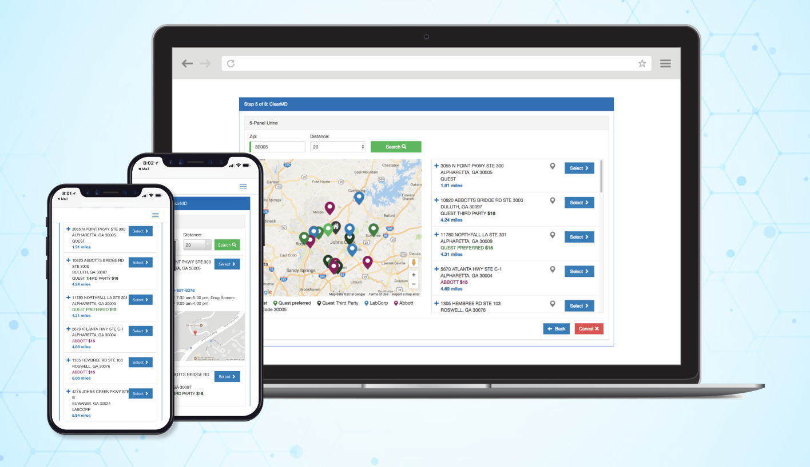
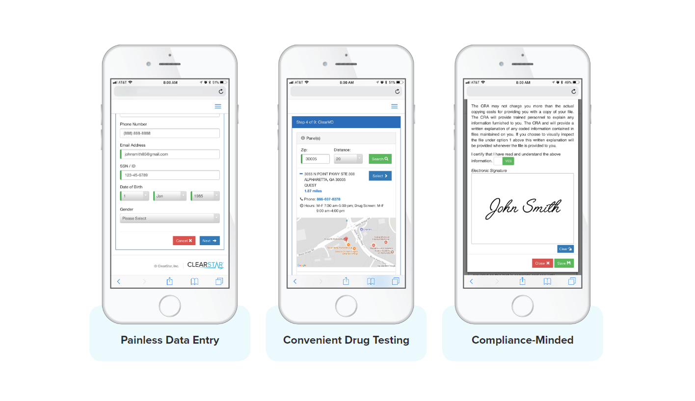
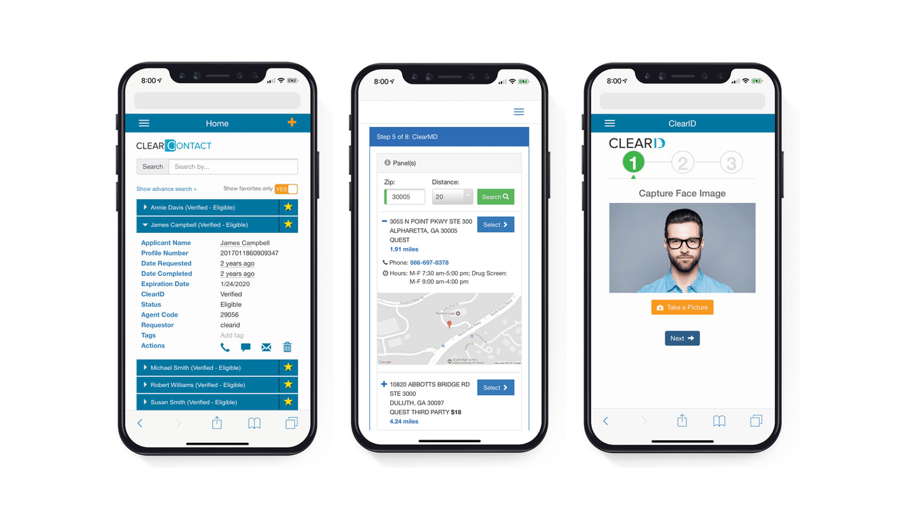
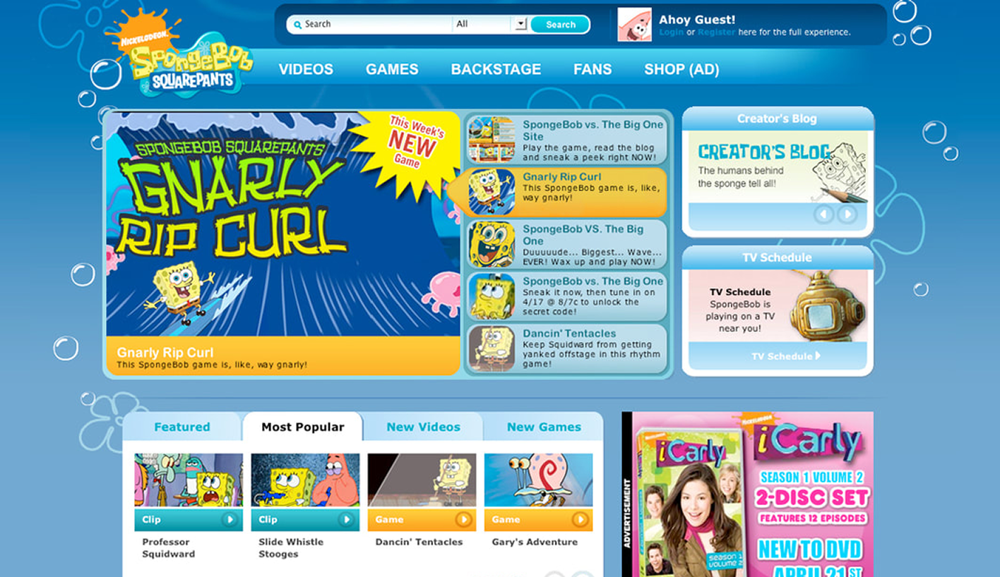
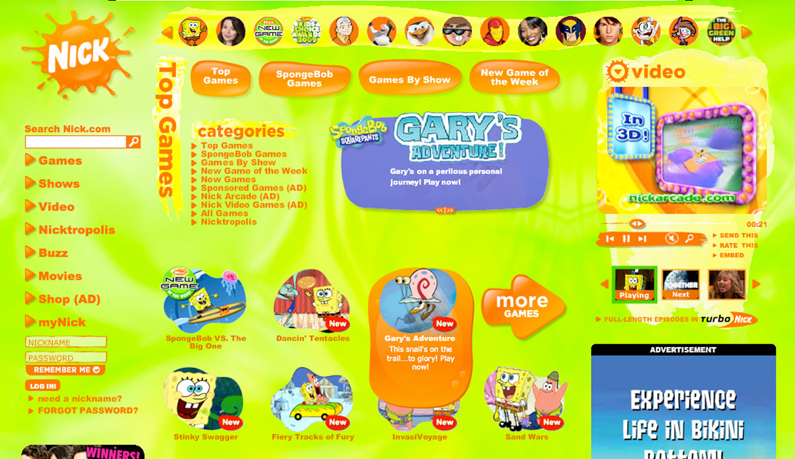
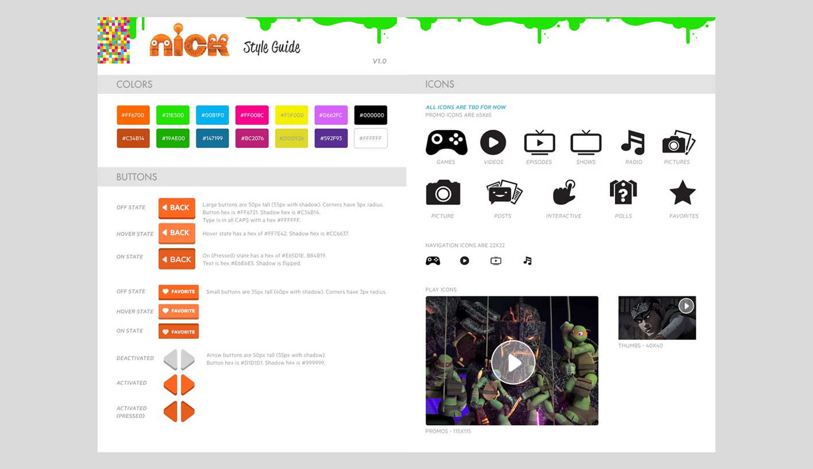
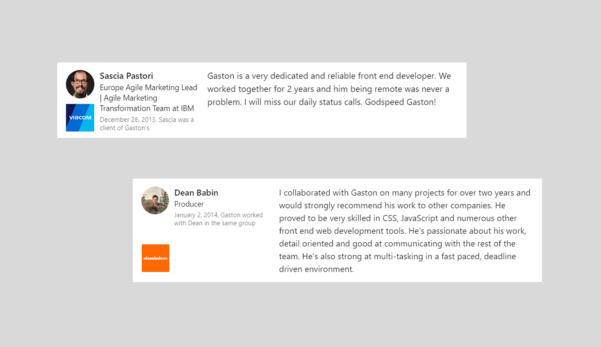

My projects
Featured Case Studies

Scaled Ibancar's loan origination by 3.5x while achieving profitability 6 months ahead of plan
How I increased conversion rates by simplifying a complex financial onboarding flow for Ibancar's loan application process.

How did I design a security feature that achieved an 85% enterprise adoption rate, a 40% reduction in support tickets, and a 30% decrease in misconfigured deployments?
I crafted a comprehensive end-to-end solution enabling users to seamlessly interact with a UI, securely migrating data into a customer-owned key management system.

How I redesigned The Hackett Group's finance dashboard to help senior executives compare 15,000+ metrics efficiently and make data-driven strategic decisions
I enhanced the data benchmarking platform, utilizing data to inform product strategy.



I simplified enterprise screening designing high-fidelity UI for complex B2B/B2C background & medical workflows
As a UI designer, I produced high-fidelity UI for complex Background and Medical checking workflows. I improved interfaces by increasing usability, ensuring features like ScreenMeNow and ClearID were intuitive and compliant.




I built engaging interfaces for Nickelodeon's high-traffic websites
As a Web Developer, I developed crisp interfaces for Nickelodeon's high-traffic media sites. I focused on implementing best UX practices to maximize user engagement for shows aimed at kids. My work ensured frontend maintenance and successfully delivered the best experience that met both user and business needs.
Product Strategy
I lead strategic planning and align design efforts with high-level business goals to ensure long-term impact.
User Research
I utilize quantitative and qualitative data to generate insights, validate hypotheses, and drive adoption.
Design Systems
I establish and govern scalable design systems to ensure consistency and efficiency across platforms.
AI-Driven Prototyping
I leverage AI tools for rapid prototyping and vibe coding to accelerate ideation and validate concepts quickly.